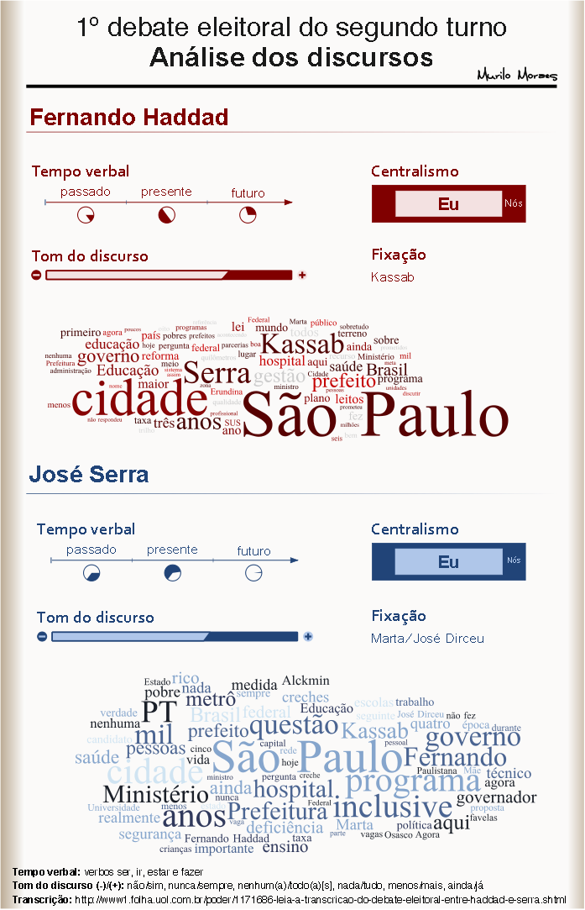

Eleições / Arquivo
Debate do segundo turno – São Paulo
Uma leitura quantitativa da fala dos candidatos no debate de 18 de outubro de 2012.
A reconstrução conta palavras na transcrição da Folha por candidato e bloco. A contagem depende das regras de tokenização.
Publicação original
Rápida análise quantitativa do discurso empregado por cada candidato no primeiro debate do segundo turno das eleições municipais de São Paulo, que ocorreu na quinta-feira (18/10/2012 – 22h30).
A transcrição do debate está disponível na web (utilizei a da Folha de São Paulo). O infográfico completo foi feito no Inkscape (http://inkscape.org/), mas utilizei o Wordle para o mapa de palavras (http://www.wordle.net/ – livre).

